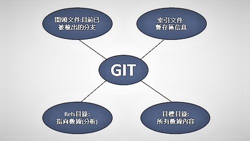

git svn：Git中所有Subversion橋接指令的基本指令都是git svn。它需要相當多的指令，因此我們將在完成一些簡單的工作流程時展示最常見的指令。當用戶使用git svn時，需特別注意避免同時與Git遠端倉儲交互操作使用。

10.2Git Objects
10.3Git References
$ cat .git/HEADref: refs/heads/master
執行 git checkout test
$ cat .git/HEADref: refs/heads/test
也可以手動編輯此文件，但同樣可以執行更安全的命令:
執行symbolic-ref
$ git symbolic-ref HEADrefs/heads/master
設置HEAD:
$ git symbolic-ref HEAD refs/heads/test$ cat .git/HEADref: refs/heads/test
10.4Packfiles
10.5The Refspec
10.4Packfiles
使用 git cat-file 命令查看這個文件大小
使用git gc打包文件
10.5The Refspec
The Refspec
.git / config文件中添加遠端origin的名稱，遠程存儲庫的URL以及用於獲取的refspec
[remote "origin"]
url = https://github.com/schacon/simplegit-progit
fetch = +refs/heads/:refs/remotes/origin/
如果想一次性執行某些操作，也可以在命令行中指定refspec
$ git fetch origin master:refs/remotes/origin/mymaster
指定多個refspec
$ git fetch origin master:refs/remotes/origin/mymaster \ topic:refs/remotes/origin/topic From git@github.com:schacon/simplegit ! [rejected] master -> origin/mymaster (non fast forward) * [new branch] topic -> origin/topic
刪除refspec
git push origin :topic
git push origin -- delete topic
Transfer Protocols--傳輸協議
Git可以透過兩種主要方式在兩個倉儲之間傳輸數據：“啞吧”協議與“智能”協議。本章重點著重於介紹這兩個主要協議的運作方式。
The Dumb Protocol--啞巴協議
該協議稱為“啞巴協議”，是因為它在傳輸過程中不需要服務端的Git特定代碼; 獲取過程是一系列HTTP GET請求，使用者可以自由的呈現Git倉儲的安排。
本章重點在介紹Git內部的維護和數據的恢復，有時Git會自動執行一個名為“auto
不小心遺失提交則可使用git long和git master兩個指令來進行恢復。
Git總是在bashshell中運行，並使用許多shell環境變量來確定它的行為方式。
GIT_EXEC_PATH：可透過運行檢查當前設置git --exec-path。
HOME：它是Git查找全局配置文件的地方。
GIT_CONFIG_NOSYSTEM：如果您的系統配置干擾了您的指令，但是您無權更改或刪除它，這將非常有用。
GIT_COMMITTER_NAME 設置提交者的名字。
GIT_COMMITTER_EMAIL 是“提交者”字段的電子郵件地址。